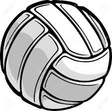
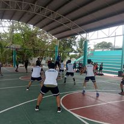

Voleibol
Impartido por el profesor Geovanny Edson George Barranco García. Las prácticas se suelen realizar en las canchas especificas de voleibol y durante la hora hacen ejercicios de como pegarle al balón, las posiciones de cada ejercicio y saques.
Tambien se enseña cosas teóricas, como el nombre de las líneas que conforman la cancha de voleibol, como acomodar las manos al momento de hacer golpe bajo, entre otras.
Horarios:
Turno vespertino
| Horarios |
Lunes |
Sábado |
| 8:00-9:00 |
|
1ro matutino |
| 9:00-10:00 |
1ro vespertino |
1ro matutino |
| 10:00-11:00 |
1ro verspertino |
PRE-SELECTIVO |
| 11:00-12:00 |
3ro vespertino |
PRE-SELECTIVO |
| 12:00-13:00 |
3ro vespertino |
SELECTIVO |
| 13:00-14:00 |
5to vespertino |
SELECTIVO |
Turno matutino
| Horarios |
Lunes |
SÁBADO |
| 14:00-15:00 |
5to matutino |
SELECTIVO |
| 15:00-16:00 |
3ro matutino |
|
| 16:00-17:00 |
3ro matutino |
|
